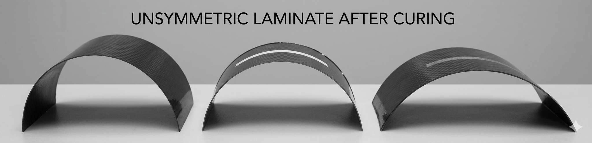

Teaching Notes on Classical Lamination Theory, MATLAB, COMSOL, and the Bridge to Fracture Mechanics
This module is about how to model a laminated structure in a way that is physically meaningful, computationally transparent, and useful for engineering interpretation.
material data \(\rightarrow\) lamina stiffness \(\rightarrow\) laminate stiffness \(\rightarrow\) deformation \(\rightarrow\) ply stress \(\rightarrow\) strength assessment \(\rightarrow\) FEM validation \(\rightarrow\) fracture-mechanics extension
Recommended References for Engineers:
The central analytical tool is Classical Lamination Theory (CLT). CLT starts from the mechanics of a single ply, builds the laminate stiffness from all plies, and then predicts the response under in-plane forces and bending moments.
A laminate is a stack of plies, each with its own material orientation \(\theta_k\) and thickness \(t_k\). Even when every ply comes from the same material system, the laminate does not behave like an isotropic plate. Its stiffness depends on the lamina elastic constants, the stacking sequence, the thickness distribution, and whether the laminate is symmetric or unsymmetric.
The practical questions are:
This equation is the laminate-level constitutive law of Classical Lamination Theory (CLT). It states that the applied in-plane force resultants and bending/twisting moment resultants are related to the laminate mid-plane strains and curvatures through the stiffness blocks \(\mathbf{A}\), \(\mathbf{B}\), and \(\mathbf{D}\).
| 3D Continuum Quantity | 2D Laminate (Thickness-Integrated) | Meaning |
|---|---|---|
| Displacement \(u(x,y,z)\) | Mid-plane strain \(\boldsymbol{\varepsilon}_0\) | In-plane deformation |
| Rotation \(\theta(x,y)\) | Curvature \(\boldsymbol{\kappa}\) | Bending deformation |
| Force \(F\) | Force resultant \(\mathbf{N}\) (N/m) | Force per unit width |
| Moment \(M\) | Moment resultant \(\mathbf{M}\) (N) | Bending moment per unit width |
| Stiffness \(k\) | Laminate stiffness \(\mathbf{A, B, D}\) | Effective stiffness after thickness integration |
Physically, the equation says that a laminate can respond in two ways: it can deform in its plane and it can bend out of plane. The matrix \(\mathbf{A}\) governs the first response, \(\mathbf{D}\) governs the second, and \(\mathbf{B}\) tells us whether these two responses are coupled.
In the usual CLT workflow, the matrices \(\mathbf{A}\), \(\mathbf{B}\), and \(\mathbf{D}\) are not prescribed independently. They are computed from the laminate itself: the lamina elastic properties, ply orientations, stacking sequence, and thickness coordinates.
By contrast, the vectors \(\mathbf{N}\) and \(\mathbf{M}\) are usually treated as the externally applied load resultants. Once the laminate stiffness and the applied loading are known, the main unknowns to be solved are the mid-plane strains \(\boldsymbol{\varepsilon}_0\) and the curvatures \(\boldsymbol{\kappa}\).
Typical interpretation. In a forward CLT problem, we first define the laminate, which gives \(\mathbf{A}\), \(\mathbf{B}\), and \(\mathbf{D}\). We then prescribe the applied force and moment resultants \(\mathbf{N}\) and \(\mathbf{M}\). The constitutive system is then solved for \(\boldsymbol{\varepsilon}_0\) and \(\boldsymbol{\kappa}\).
Example 1: symmetric laminate. If the stacking sequence is symmetric about the mid-plane, then typically \(\mathbf{B}=0\). In that case, applying only \(N_x\) produces mainly in-plane strain \(\varepsilon_x^0\), without inducing bending curvature.
Example 2: unsymmetric laminate. If the laminate is unsymmetric, then \(\mathbf{B}\neq 0\) in general. A purely in-plane tensile load can then produce not only extension, but also bending. In other words, pulling the laminate may cause it to curve.

This type of warpage is one of the clearest physical manifestations of an unsymmetric laminate. The image helps connect the CLT constitutive equation to a directly observable structural response.
This is the main equation of the module. The following page explains how the stiffness blocks are built from ply properties, ply orientations, and thickness coordinates.
Basic definitions of ply, lamina, and laminate; material constants; reduced stiffness matrix; transformed reduced stiffness; laminate A, B, and D matrices; worked carbon/epoxy example; strength parameters; and MATLAB implementation.
Open notesHow to use CLT as a baseline, what should be compared between CLT and FEM, what kinds of local effects require COMSOL, how strength differs from fracture, and how the discussion extends toward damage initiation and propagation.
Open notes